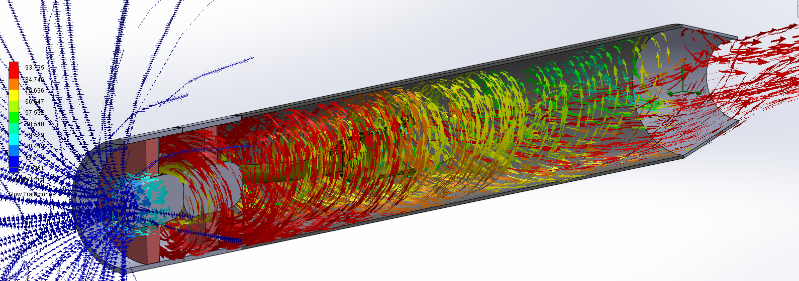

Overview
A hydrogen-powered jet engine prototype with on-board chemical hydrogen generation. The project explored the feasibility of using chemically generated hydrogen as a clean fuel source for jet propulsion, eliminating the need for stored compressed hydrogen tanks.
Key Aspects
- Chemical Hydrogen Generation: On-board hydrogen production through chemical reactions, removing the need for high-pressure hydrogen storage.
- Jet Engine Design: Compact turbojet design adapted to run on hydrogen fuel, with custom intake and combustion chamber modifications.
- Clean Propulsion: Hydrogen combustion produces water vapor as the primary byproduct, making it a zero-carbon propulsion approach.